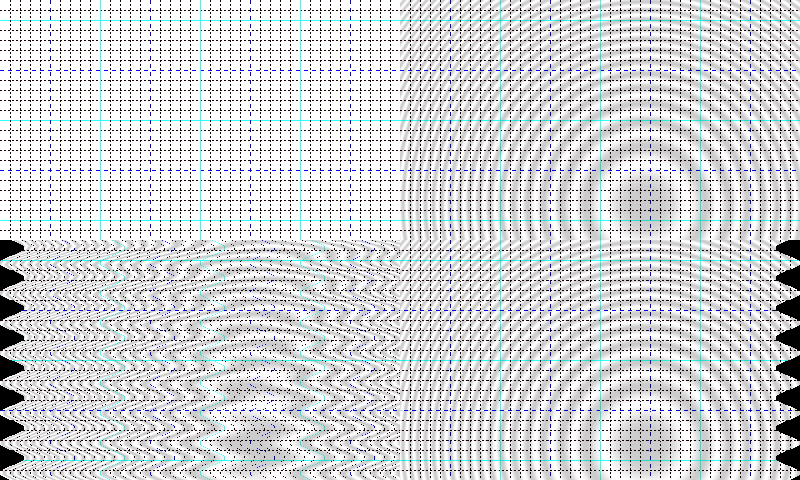

vcm
miscScript
example test code:-
ret = core.std.BlankClip(width=400,height=240,format=vs.RGB24,color=[25,55,255])
#draw a grid
ret = core.vcm.Grid(ret,style=1, color = [255], bcolor=[0,255], vbcolor=[255,250,255])
#overlay a pattern
ret1 = core.vcm.Pattern(ret,type = 3,spk = 1, spike = 0.1,stat = 0, orient = 1,rad = 100,x = 245, y=205, wl = 24, overlay = 0.2, bgr=[80,100])
#introduce Jitter
ret2=core.vcm.Jitter(ret1, type = 2)
#remove jitter
ret3=core.vcm.DeJitter(ret2,jmax=80,thresh=0.01, wsyn = 0)
reta=core.std.StackHorizontal([ret,ret1])
retb=core.std.StackHorizontal([ret,ret1])
ret=core.std.StackVertical([reta,retb])
Top left grid, right pattern overlay, bottom left jittered, right dejittered.
